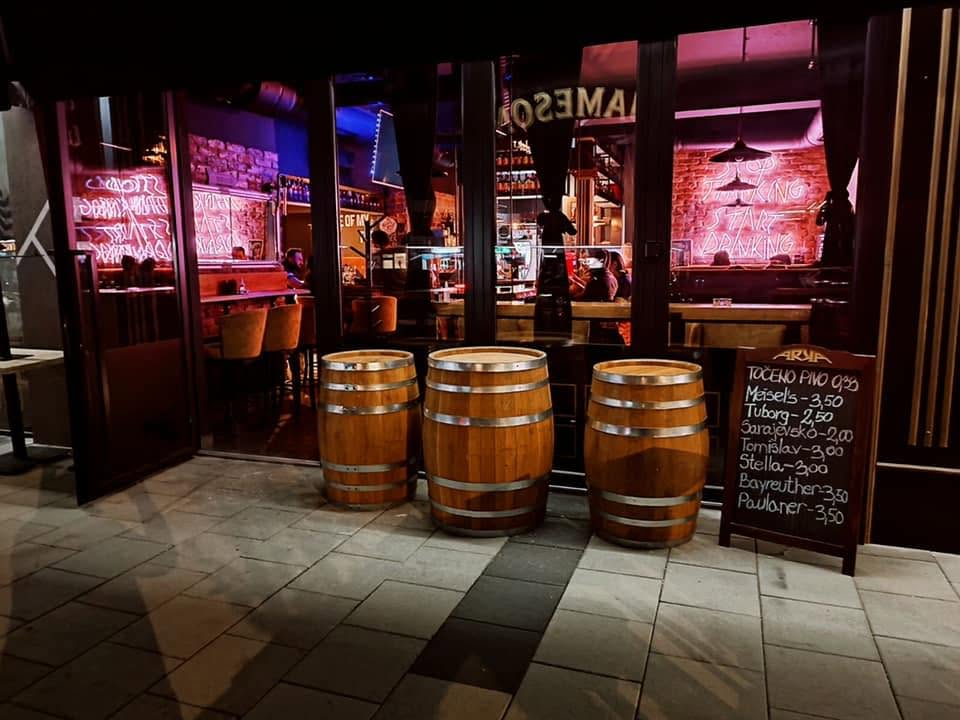
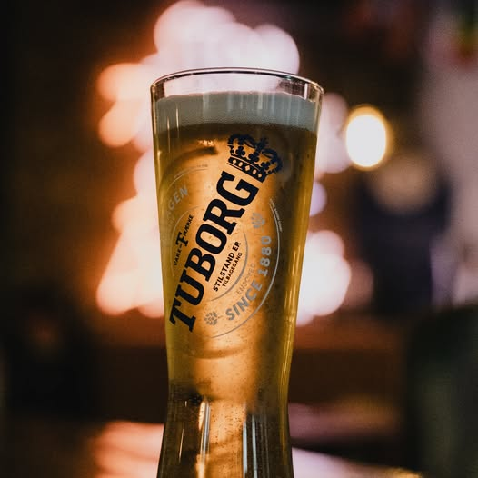
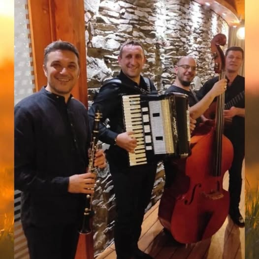

Pub Arka · Sarajevo
Pravo mjesto.
Prave fotografije.
Za novu verziju stranice koristimo stvarne kadrove sa zvaničnih profila Pub Arke — ulaz u lokal, točeno pivo i večer uz živu muziku.
Autentične fotografije Pub Arke


